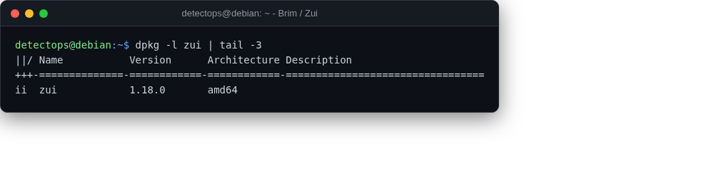

Brim / Zui¶
app
Desktop app for searching Zeek logs and pcaps side by side.

How to run¶
Reference¶
https://github.com/brimdata/zui
Part of the Network Security toolset in DetectOps.
app
Desktop app for searching Zeek logs and pcaps side by side.

https://github.com/brimdata/zui
Part of the Network Security toolset in DetectOps.